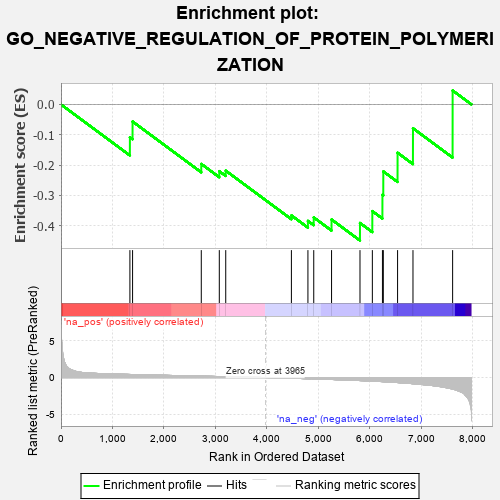
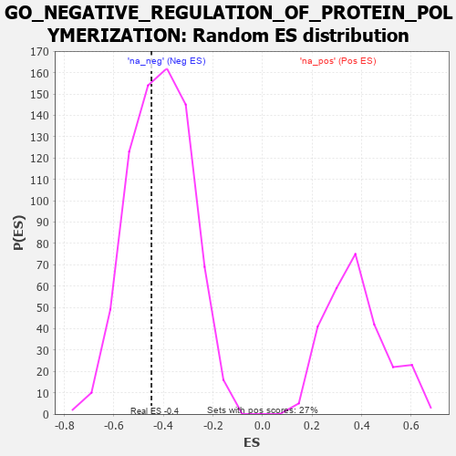

| | | Dataset | 7d |
| Phenotype | NoPhenotypeAvailable |
| Upregulated in class | na_neg |
| GeneSet | GO_NEGATIVE_REGULATION_OF_PROTEIN_POLYMERIZATION |
| Enrichment Score (ES) | -0.4487974 |
| Normalized Enrichment Score (NES) | -1.0858049 |
| Nominal p-value | 0.38767123 |
| FDR q-value | 0.7663109 |
| FWER p-Value | 1.0 |
Table: GSEA Results Summary

Fig 1: Enrichment plot: GO_NEGATIVE_REGULATION_OF_PROTEIN_POLYMERIZATION
Profile of the Running ES Score & Positions of GeneSet Members on the Rank Ordered List
| PROBE | GENE SYMBOL | GENE_TITLE | RANK IN GENE LIST | RANK METRIC SCORE | RUNNING ES | CORE ENRICHMENT | | 1 | TBCD | | | 1338 | 0.422 | -0.1083 | No |
| 2 | FKBP4 | | | 1390 | 0.412 | -0.0563 | No |
| 3 | SLIT2 | | | 2724 | 0.195 | -0.1962 | No |
| 4 | MAP2 | | | 3074 | 0.140 | -0.2202 | No |
| 5 | TWF1 | | | 3199 | 0.123 | -0.2184 | No |
| 6 | EPS8 | | | 4474 | -0.088 | -0.3660 | No |
| 7 | FLII | | | 4795 | -0.156 | -0.3841 | No |
| 8 | CAPZB | | | 4908 | -0.179 | -0.3727 | No |
| 9 | SSH1 | | | 5254 | -0.258 | -0.3795 | No |
| 10 | BBS4 | | | 5806 | -0.407 | -0.3910 | Yes |
| 11 | ADD2 | | | 6046 | -0.487 | -0.3519 | Yes |
| 12 | VDAC2 | | | 6242 | -0.553 | -0.2980 | Yes |
| 13 | SVIL | | | 6259 | -0.558 | -0.2209 | Yes |
| 14 | KANK1 | | | 6536 | -0.678 | -0.1594 | Yes |
| 15 | FHOD3 | | | 6835 | -0.834 | -0.0786 | Yes |
| 16 | KANK3 | | | 7605 | -1.559 | 0.0460 | Yes |
Table: GSEA details [plain text format]

Fig 2: GO_NEGATIVE_REGULATION_OF_PROTEIN_POLYMERIZATION: Random ES distribution
Gene set null distribution of ES for GO_NEGATIVE_REGULATION_OF_PROTEIN_POLYMERIZATION